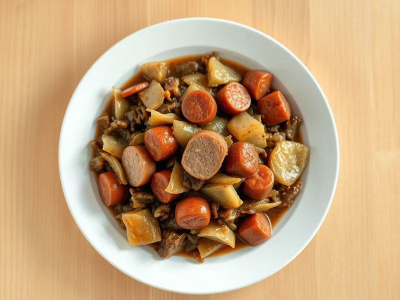

Бигос с квашеной капустой и мясом
Польское блюдо из квашеной и свежей капусты, тушённой со свининой и копчёностями
150 мин6 порц.579 ккал на порциюБ 28 · Ж 43 · У 20Европейская кухня
Открыть в приложении: порции, таймеры, список покупок
Продукты на 6 порц.
- Квашеная капуста700 г
- Капуста белокочанная500 г
- Свинина500 г
- Бекон150 г
- Сосиски5 шт
- Чернослив80 г
- Лук репчатый2 шт
- Томатная паста1,5 ст. л.
- Лавровый лист2 шт
- Растительное масло1 ст. л.
- Соль1 ч. л.
- Вода1,5 стак.
Как готовить
- Промойте квашеную капусту, если она очень кислая, отожмите и залейте горячей водой в толстостенной кастрюле. Тушите на слабом огне 30 минут.
- Тем временем обжарьте бекон полосками на сухой сковороде на среднем огне 5 минут, добавьте масло и свинину кубиками по 2 см, жарьте 10 минут до корочки.
- Добавьте лук полукольцами и жарьте 5 минут до мягкости. Переложите всё к квашеной капусте.
- Добавьте нашинкованную свежую капусту, томатную пасту, чернослив и лавровый лист, перемешайте. Тушите под крышкой на слабом огне 60 минут, помешивая.
- Добавьте сосиски кружками, посолите по вкусу и тушите ещё 20 минут, пока капуста не станет мягкой и тёмной.
Совет. Бигос по традиции разогревают несколько дней подряд, и с каждым разом он вкуснее. Храните в холодильнике до 5 дней.